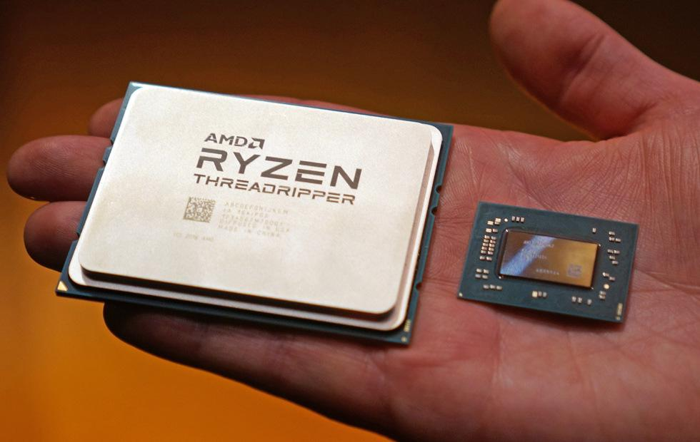

CPU

Ein Prozessor ist ein (meist sehr stark verkleinertes und meist frei) programmierbares Rechenwerk,
also eine Maschine oder eine elektronische Schaltung, die gemäß übergebenen Befehlen
andere Maschinen oder elektrische Schaltungen steuert und dabei einen
Algorithmus (Prozess) vorantreibt, was meist Datenverarbeitung beinhaltet.